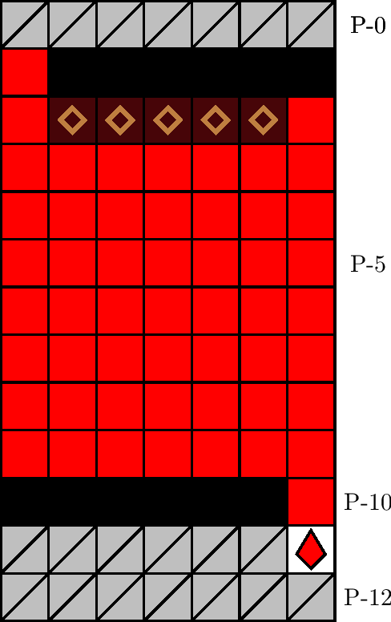

一般指針
エリア・吊り天井

指針
吊り天井は，赤石の連結成分が座標 P-(0, −3) までに収まっている場合は連結成分の破壊後直ちに進入し，さもなければ塊が落下するまで待機してから進入します．
解説
吊り天井とは，図 3.2.11.1 のエリアを指します． 700 m型 77 行目に確率で出現します． P-1 行目の壁の配列によって同定されます．
エリア内に出現する石は赤石のみで，エリアへ進入可能になるのと同時にエリア内の塊の落下猶予が始まります．塊の落下を待つと P-(0, −3) 上方からの落下ブロックに圧迫される恐れがあるため，エリア進入は赤石の破壊後直ちに行い，座標 P-(9, +3) を目指して移動します．エリア進入直後から右入力し続けることでも P-(9, +3) に到達できますが，後述の理由により −3 列を一度急降下してから水平移動により P-(9, +3) に向かうほうが簡明です．
赤石の連結成分は P-(0, −3) 上方または右方へ延びていることがあります．この場合，犬の位置によっては，エリアへ遅滞なく進入・潜行することで，かえって塊に圧迫される恐れがあります．例えば，赤石の連結成分が P-(0, −2) まで延びていて，犬が P-(0, −1) に位置するとき，赤石を破壊してエリアに通常どおり進入すると途中で塊に圧迫されます．一つの基準は，赤石の連結成分が P-(0, −3) までに収まっている場合は塊の落下を待たずに進入し，さもなければ塊の落下を待ってから進入することです．ただし， P-(0, −3) に赤石が存在する場合は適切または理論的な潜行が必要であることに注意します．また， P-(0, −3) 上方に塊が出現した場合はすべての塊の落下を待つのも有効な手段です．
なお， −3 列目を潜行してエリア（上方）に到達した場合は，赤石の連結成分が P-(−1, −3) 上方に延びていても，赤石の破壊直後に急降下することで塊の落下に間に合う可能性があります（ただし，この正確な必要十分条件を求めるには至っていません）．